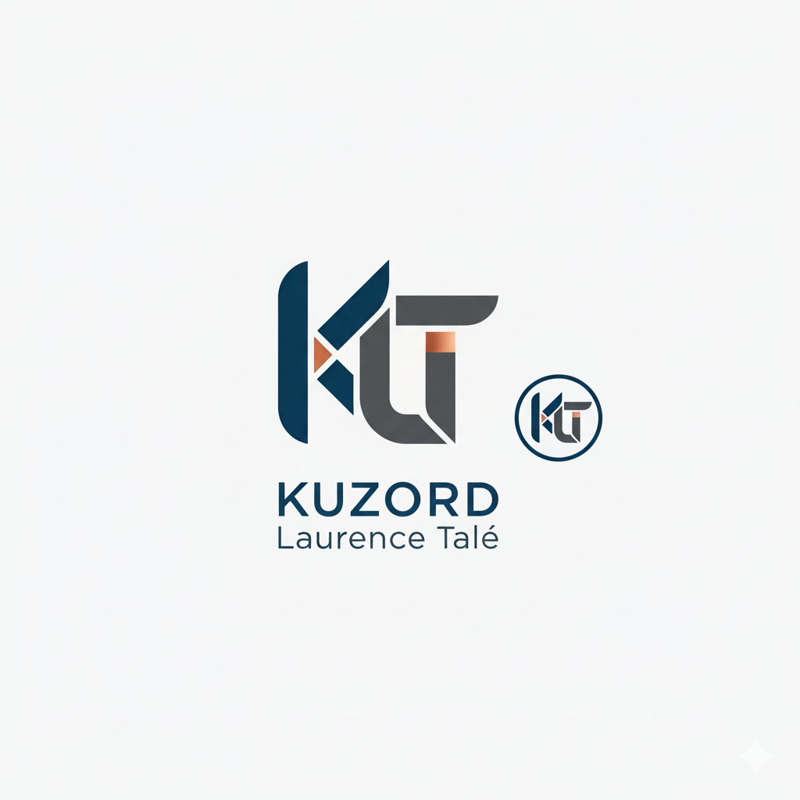
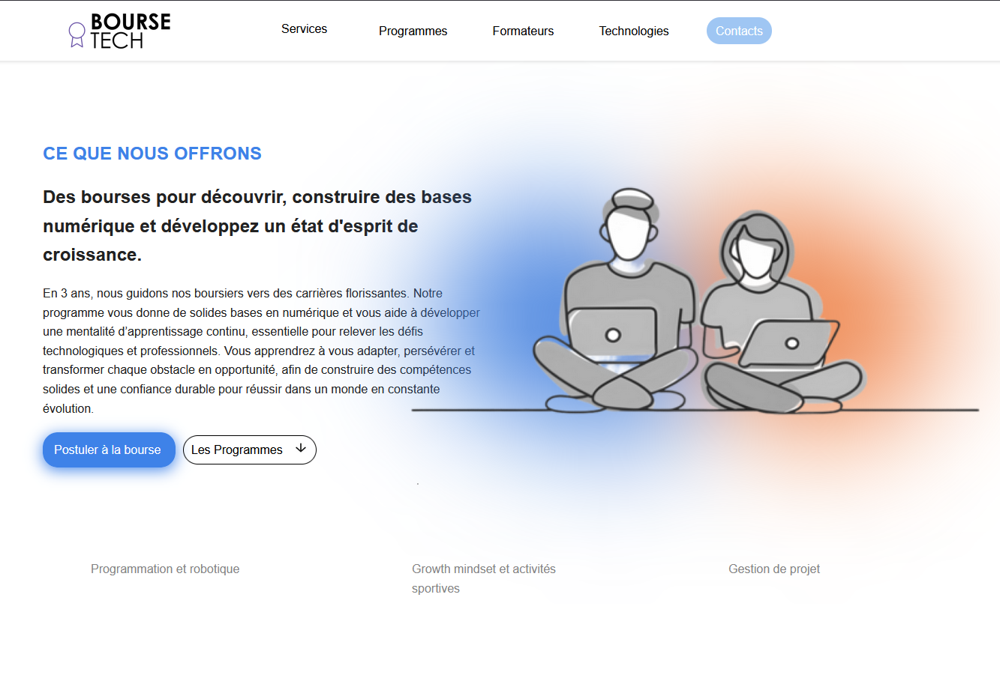
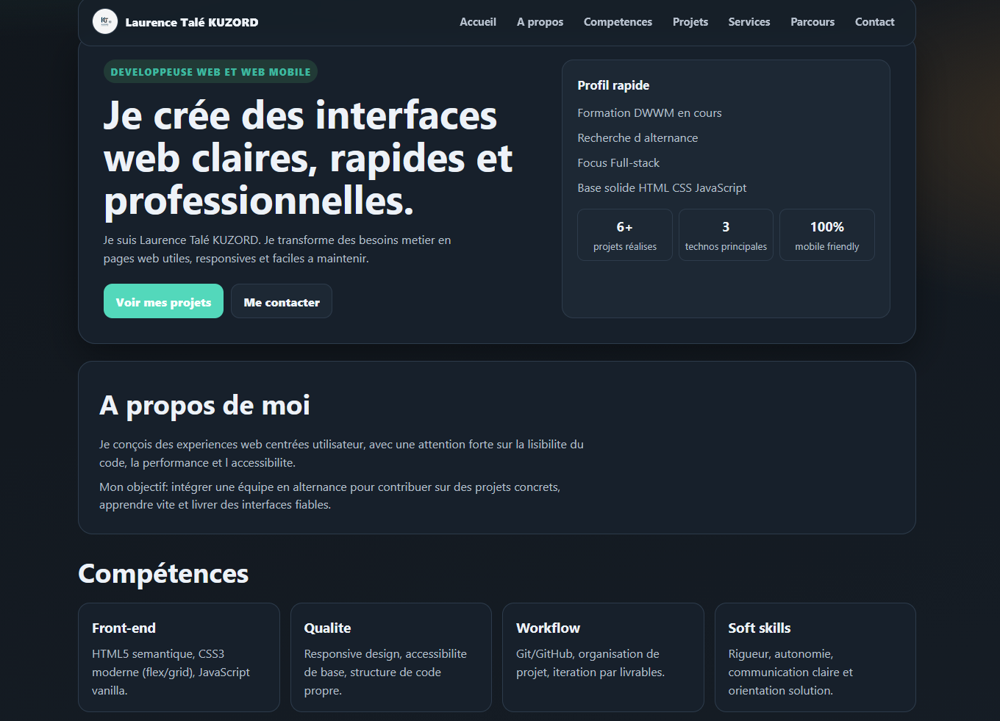
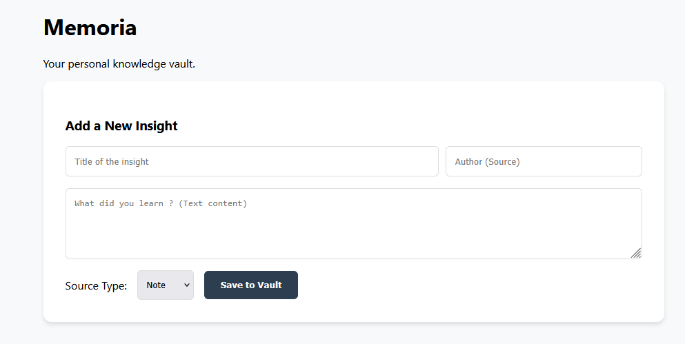
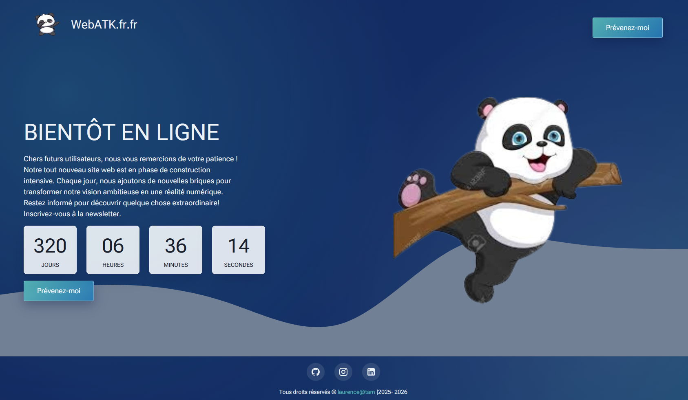

Front-end
HTML5 sémantique, CSS3 moderne (flex/grid), JavaScript vanilla.

Laurence Talé KUZORDDéveloppeuse Web et Web Mobile
Je suis Laurence Talé KUZORD. Je transforme des besoins métier en pages web utiles, responsives et faciles à maintenir.
Je conçois des expériences web centrées utilisateur, avec une attention forte sur la lisibilité du code, la performance et l'accessibilité.
Mon objectif: intégrer une équipe en alternance pour contribuer sur des projets concrets, apprendre vite et livrer des interfaces fiables.
HTML5 sémantique, CSS3 moderne (flex/grid), JavaScript vanilla.
Bases solides en SQL, logique serveur et création d'API REST simples.
Responsive design, accessibilité de base, structure de code propre.
Git/GitHub, organisation de projet, itération par livrables.
Rigueur, autonomie, communication claire et orientation solution.
Français : maîtrise orale et écrite.
Anglais : niveau scolaire (écrit, oral, compréhension).
Espagnol : A1 intermédiaire (Duolingo).

Conception d'une interface de consultation orientée données financières, avec une architecture front-end modulaire pour faciliter la maintenance et l'évolution du projet. Mise en place d'une présentation claire des informations (cartes, tableaux, filtres) afin d'améliorer la lecture et la prise de décision utilisateur.
HTML CSS JavaScript Data

Réalisation de mon site vitrine responsive pour présenter mon profil, mes compétences et mes projets de manière structurée. Intégration d'un système de thème clair/sombre, d'animations de reveal au scroll et d'une organisation de sections orientée expérience utilisateur pour renforcer la lisibilité du contenu.
UI UX Responsive Accessibilité

Projet centré sur la conception et l'implémentation d'une base de données en SQL natif. Création du schéma relationnel et mise en œuvre complète des opérations CRUD (création, lecture, mise à jour, suppression) pour garantir une gestion fiable des données. Développement des fonctionnalités d'ajout, modification et suppression des pépites, des utilisateurs et des tags, avec une logique métier cohérente et une structure de données durable.
SQL CRUD Modélisation Logique Back-end

Création d'une landing page responsive et dynamique avec un compte à rebours. Ce projet, réalisé en formation, m'a permis de concevoir pour la première fois une landing page complète, claire et adaptée à tous les écrans.
HTML CSS JavaScript
Transformation de maquettes en pages HTML/CSS propres et adaptatives.
Reprise d'interfaces existantes pour clarifier la navigation et les contenus.
Corrections, optimisation visuelle, et fiabilisation de pages existantes.
Mise en place de bases de donnees, routes API simples et logique CRUD pour petites applications.
Actuellement
Création de projets concrets pour renforcer la qualité de livraison front-end.
2025 - 2026
Approfondissement en intégration web, JavaScript et bonnes pratiques de projet.
2022 - 2025
Formation pratique en outils bureautiques et en bases de la programmation.
2023 - 2024
Diplôme obtenu, équivalent au baccalauréat français.
Accédez à mon CV et ma lettre de motivation
Mon CV détaillé en français
Ma lettre de motivation pour les alternances
Email: laurencekuzord13@gmail.com
WhatsApp: Vous écrire sur WhatsApp
LinkedIn: Voir votre profil LinkedIn
Disponibilité: Alternance Conceptrice développeuse d'application (CDA) / Projets full-stack
Zone: France (remote ou hybride)